译自官方论坛补丁帖：Patch Notes for October 12, 2026（作者 Luthius）
说明：本译文尽量保留原文结构与数值；专有名词首次出现标注英文（如 宝典 Codex），便于对照。
一、回声 Echoes
- 回声菜单现在带有下拉列表，可在可用回声 Available Echoes 之间切换（位于右侧）。
- 用于浏览可用回声的上一个/下一个按钮现在可以循环（到头后可回到起点/末尾）。
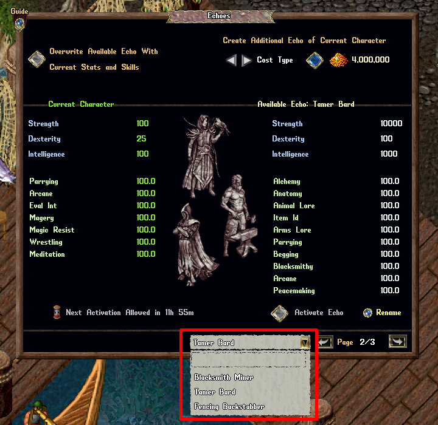
二、租赁商人 Rental Vendors
每日维护费 Daily Upkeep
- 计算租赁商人 Rental Vendors 的每日维护费 Daily Upkeep 时，以固定价或单价挂牌、单价超过 500,000 金币的物品，现在每件按 500,000 封顶参与维护费计算。
- 计算租赁商人的每日维护费时，以「整叠单价 Stack Price (each)」出售、整叠总价值超过 5,000,000 金币的物品，现在按 5,000,000 封顶参与维护费计算。
一键收取全部金币 Rental Vendors Collect All Gold
- 玩家现在拥有「一键收取全部金币 Collect All Gold」机制：可在一次操作中取出所有租赁商人上的已存金币 Gold Stored，包括玩家自己拥有的与通过租赁契约向其他玩家租用的商人。
- 玩家可在「我的商人 My Vendors」菜单中使用「一键收取全部金币」功能，可通过以下方式打开：
- 输入 [Vendors
- 人物纸娃娃 Paperdoll → 帮助 Help → 我的商人 My Vendors
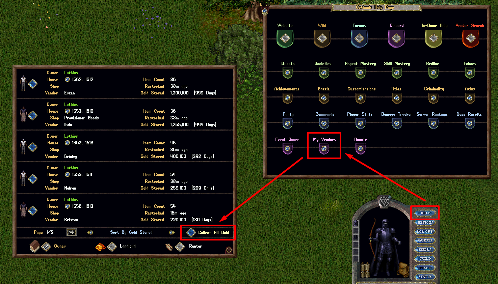
- 在菜单中点击「一键收取全部金币」按钮（需三连击确认），玩家将取出每个商人上的全部「已存金币」，并存入角色的银行箱 Bank Box。
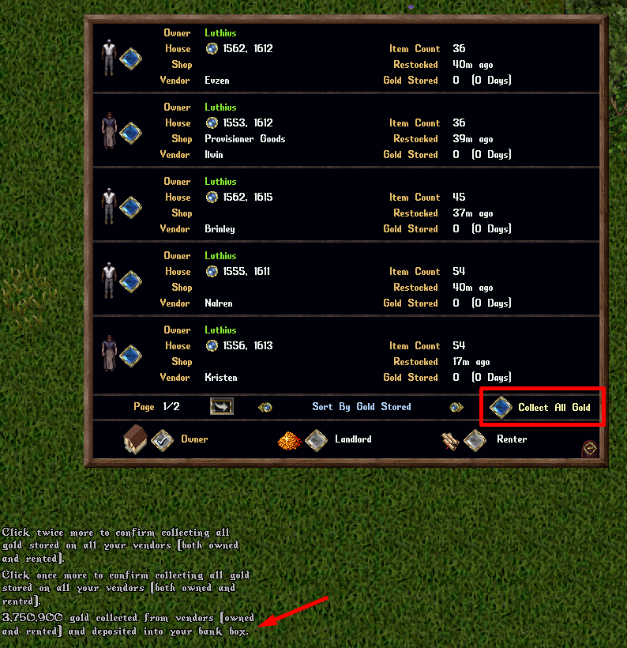
解雇商人 Dismiss Vendor
- 玩家现在可以解雇 Dismiss 自己的租赁商人（自有或租用），即使其背包中仍有剩余物品。
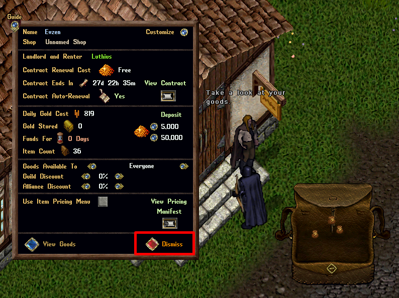
- 解雇仍有物品的商人时，物品会转入玩家的银行箱；若银行空间不足，则启用「排队 Queueing」机制。
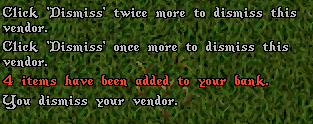
最近补货 Last Restocked
- 向租赁商人上已有的物品叠中追加物品出售，现在会更新该商人的「最近补货 Last Restocked」日期。
公会与盟友折扣 Guild and Ally Discounts
- 在租赁商人的 Owner 菜单中，为公会 Guild或联盟 Alliance设置100% 折扣时，现在显示为「免费 Free」（而非 100%，以免混淆）。
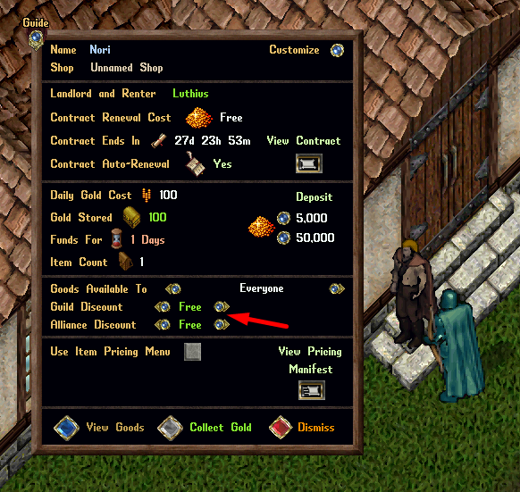
- 在玩家的购买物品 Purchase Item 菜单中，对享有 100% 折扣的物品，现在显示为「免费！(公会/盟友折扣)」。
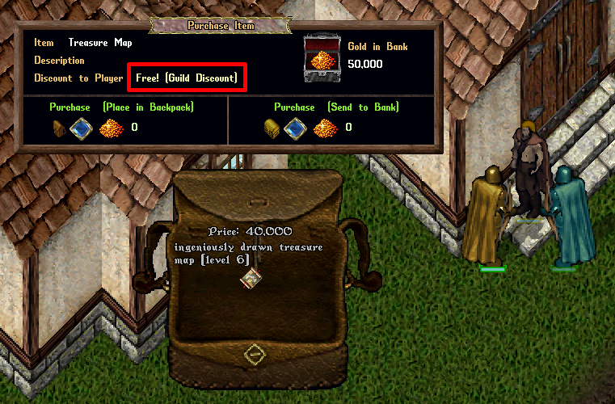
- 对享有100% 折扣的商人，单击提示现在显示为「[物品对公会/盟友免费]」。
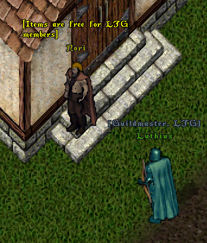
三、召唤 Summoning
- 修复了导致气元素 「Microburst」 升级加成计算不正确的问题。
- 修复了导致剑灵 「Dancing Blades」 升级加成计算不正确的问题。
- 修复了导致恶魔 「Ancient」 升级加成计算不正确的问题。
- 修复了导致能量漩涡 「Gathering Storm」 升级加成计算不正确的问题。
四、区域限制 Region Restrictions
- 在受限区域（如地牢 Dungeons）死亡的红手盗贼 Red Hand Thieves，现在会收到头顶文字提示，告知其在该地点的新区域限制（此前仅有系统消息）。
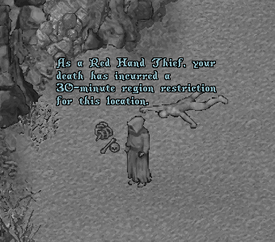
- 在受限区域（如地牢）死亡的杀人者 Murderers，现在会收到头顶文字提示，告知其在一个或多个地点的区域限制（此前仅有系统消息）。
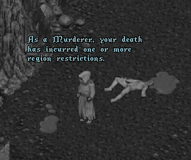
- 作为盗贼或杀人者死亡时，玩家仍会收到「说出 'I must consider my sins' 或输入 [ConsiderSins 查看你的区域限制」的系统消息。
五、房屋 Houses
- 修复了将房屋由公开 Public 改为私有 Private 后，房屋标牌 House Sign 朝向错误的问题。
- 通过房屋标牌购买房屋，现在会重置该房屋的所有设置，涉及传送地毯 Warp Tiles 与自定义运输箱 Custom Shipping Crates（机制仍保持解锁，但位置会被清空、设置重置为最严格值）。
六、租赁房间 Rental Rooms
- 以幽灵 ghost 状态单击租赁房间的前门，现在会显示「(双击复活)」提示。
- 以幽灵状态双击租赁房间的前门，现在会给出复活 resurrect 选项。
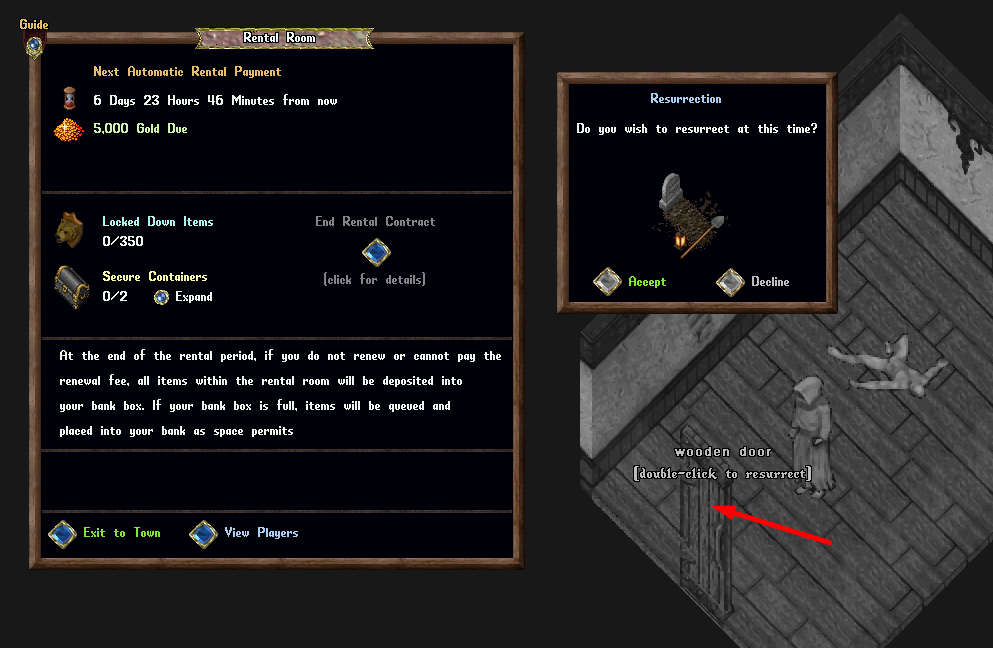
- 玩家在租赁房间内死亡时，会收到「双击你的租赁房间门以复活，或作为幽灵离开。」的头顶提示。
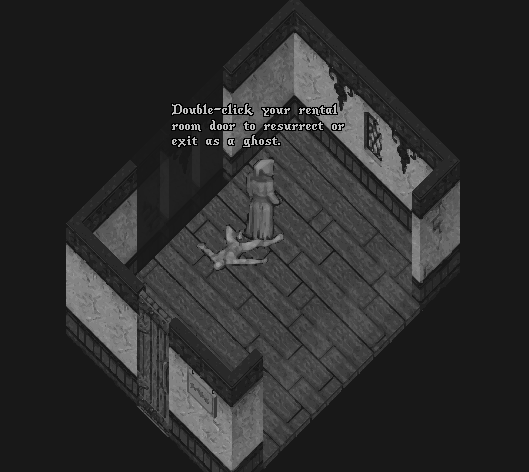
七、宝典配置方案 Codex Loadouts
- 交换了用于切换宝典配置方案的上/下按钮位置，使其与下拉列表中的方案浏览方向一致。
- 下拉列表中任何因红线宝典升级 Redline Codex Upgrades 而花费点数超过通常上限（多数宝典为 20 点）的宝典配置方案，现在会在方案名称中显示已花费总点数，例如「[21 pts] Tamer Bard」，让玩家知道该方案使用了红线宝典升级。
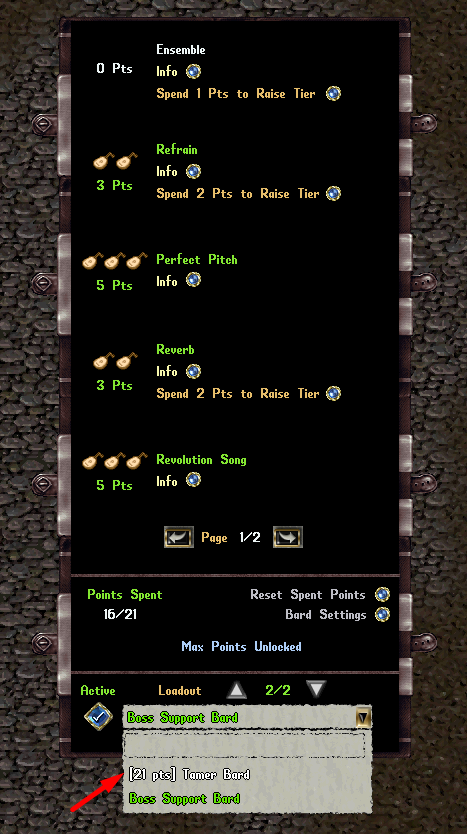
八、分发战利品袋 Distribution Loot Bag
- 玩家现在可在普雷瓦利亚市场 Prevalia Market 的 Misc 分类与家具 Furniture 分类下购买分发战利品袋 Distribution Loot Bags。
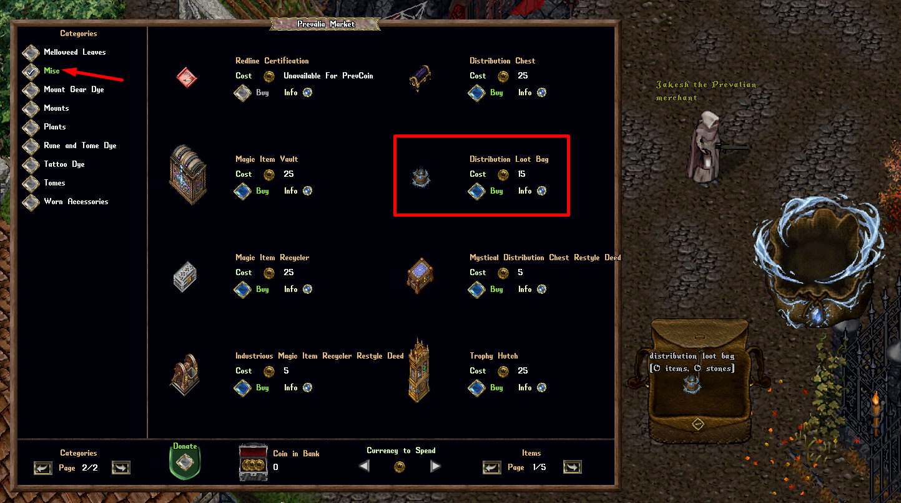
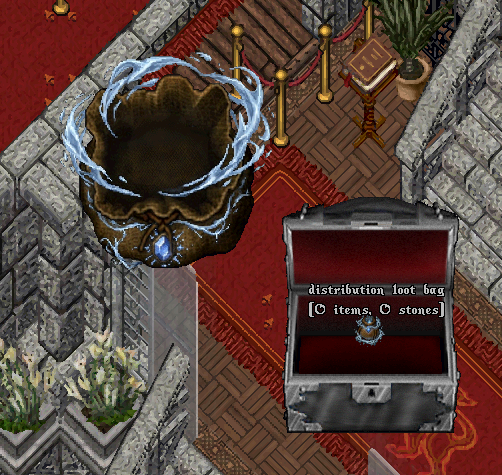
- 若玩家的银行内放有分发战利品袋，则每当有物品通过分发箱 Distribution Chest 的分发送入玩家银行时，这些物品会放入分发战利品袋，而非银行箱主层。
- 无法装入分发战利品袋（125 件上限），或会超出玩家银行总容量（125 件上限，可通过自定义提高）的物品，将走常规的「银行排队 Bank Queue」处理。
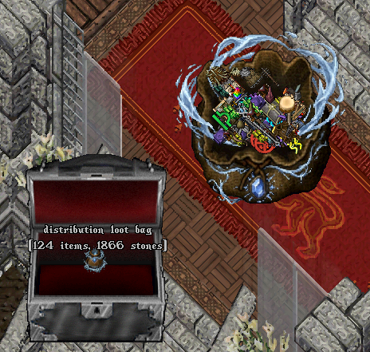
九、分发箱 Distribution Chests
- 分发箱的取回空容器 Retrieve Empty Containers 机制，现在会忽略任何已封存的 Paragon 宝箱 Paragon Chests（即实际装有物品者）。
十、金币衰减 Gold Decay
- 当地牢内发生金币衰减 Gold Decay（地面或地面容器中的金币）时，99 或以下的金币数量将被删除（而非仅减少）。
十一、冒险者背包 Adventurer's Satchel
- 从冒险者背包 Adventurer's Satchels 中移除了「将背包内全部加入 Add All in Backpack」的 shift-单击上下文菜单选项按钮。
十二、物品图形 Item Graphics
- 修复了若干「旋转后」图形错误的物品（经由室内装潢师 Interior Decorator）。
十三、物品名称 Item Names
- 修复了若干单击名称错误的物品（例如「Cambeson」「Startassle Jelly」）。
十四、容器 Containers
- 更新了 100+ 个容器的容器图形 Container graphics。
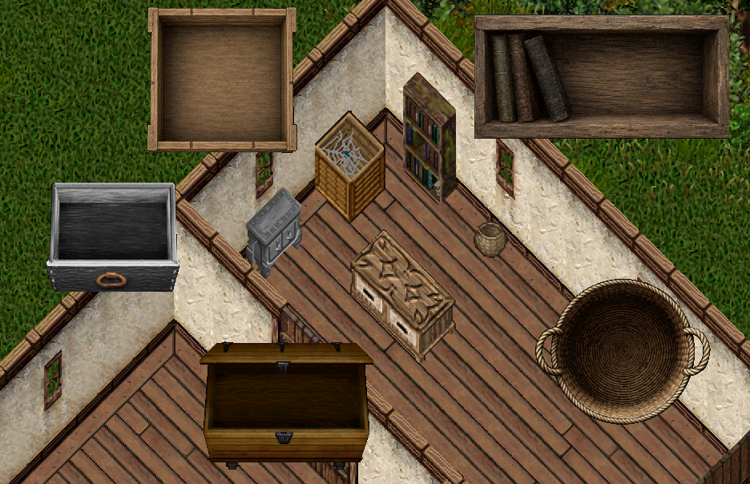
十五、普雷瓦利亚储物箱 Prevalia Trunk
- 修复了若干无法加入普雷瓦利亚储物箱 Prevalia Trunk 的限量版普雷瓦利亚商人更新「附加内容契约 Add-On Deeds」。
十六、船只 Ships
绷带 Bandages
- 玩家在正在使用兽医补给 Veterinary Supplies 期间，将无法再通过船只热键栏 Ship Hotbar 为船员 crewmembers 施加绷带 Bandages。
望远镜 Spyglasses
- 修复了望远镜 Spyglasses 使用的是玩家当前所在船只的加成、而非其担任船长的船只加成的问题。
攻击与伤害追踪 Aggression and Damage Tracking
- 修复了若干问题：玩家之间各类敌对船只对战行为，有时无法正确建立或维持玩家与船只之间的「攻击 Aggression」追踪（曾导致恶名 Infamy 分配偶发异常）。
- 船只对战的攻击与伤害追踪现在统一持续 5 分钟（若战斗继续则持续刷新）。
争夺海洋 Boss Contested Ocean Bosses
- 修复了在争夺海洋 Boss 区域（半径 150 格）战斗时的若干攻击标记问题。
- 海洋 Boss 死亡后，其死亡地点在接下来 5 分钟内仍按半径 150 格的争夺海洋 Boss 区域处理，用于攻击与恶名判定。
恶名 Infamy
- 修复了若干恶名无法正确识别玩家船只、玩家随从与玩家船员之间攻击行为的问题。
- 玩家现在在任何情况下，每 15 分钟从同一名玩家处最多获得 1 点恶名（击沉船只、玩家死亡或两者兼有）。
- 玩家死亡现在仅当该玩家仍在船上（而非陆地）时才计入恶名。
恶名衰减 Infamy Decay
- 在每天的开始时，玩家将失去 1 点恶名。
- 若玩家在最近 3 天内未获得任何恶名，则改为失去 2 点恶名。
- 若玩家在最近 7 天内未获得任何恶名，则改为失去 3 点恶名。
补丁上线时 When Patch Goes Live
- 在本补丁上线时，任何 OutlandsID 上恶名达到 30 或以上的玩家，将被降至 29 点恶名。
十七、威慑 Barding
- 所有来自被玩家挑衅 provoked 的生物的伤害，若该玩家处于静止惩罚 Stationary Penalty 状态（因 5 分钟未移动，或最后一次旅行后未移动），将被降至 1。
十八、元素 Aspects
- 元素菜单的元素特殊效果按钮现在带有悬停提示 rollover tooltips，显示其描述。
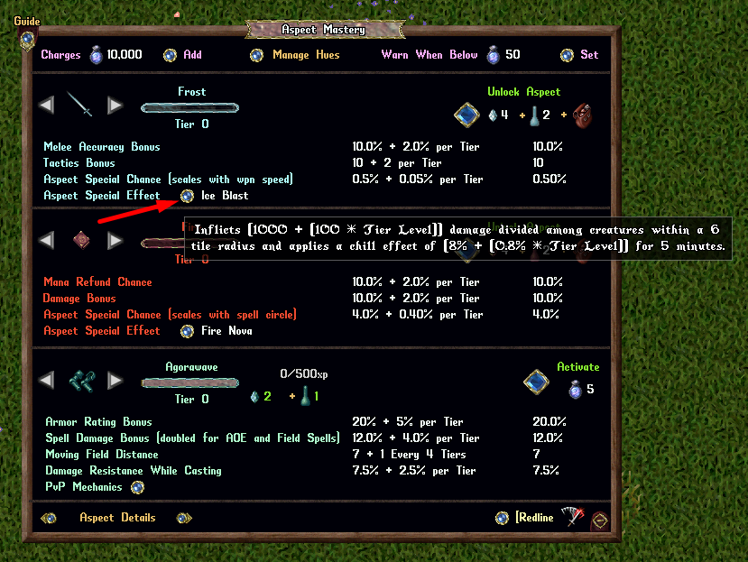
波涛护甲 Agorawave Armor
- 波涛领域 Agorawave Fields 不再击中与领域所在格 z 轴高度差超过 15 层的生物（即与施法者不在同一楼层的生物）。
十九、怪物洗牌 Monster Shuffle
- 玩家现在可以为怪物洗牌使用「向余额增加 25,000」按钮选项。
- 怪物洗牌的起始下注成本 Roll Cost 现在是 500（此前为 250）。
- 玩家现在可将下注成本提高至最高 25,000（此前上限为 5,000）。
- 注意：中奖概率与奖励处理与之前相同；随下注成本线性提升的机制也与之前一致。
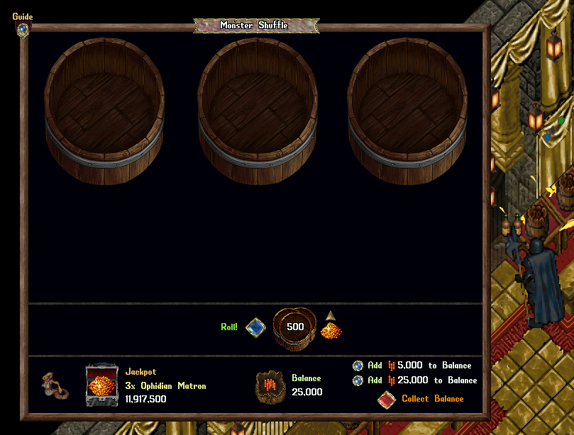
二十、动画 Animations
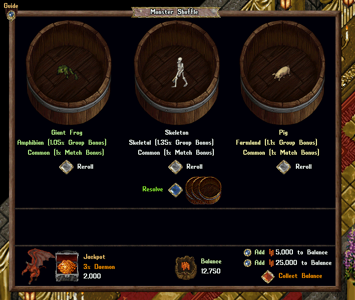
二十一、训练武器 Training Weapons
- 训练武器 Training Weapons 现在最高造成 1 点伤害（此前从 1 点伤害起步，但会因宝典 / 红线 / 精通链 / 技能而获得递增，最终伤害高得多）。
二十二、植物 Plants
- 植物盆 Plant Bowls 的当前效果按钮现在带有悬停提示，显示其描述。
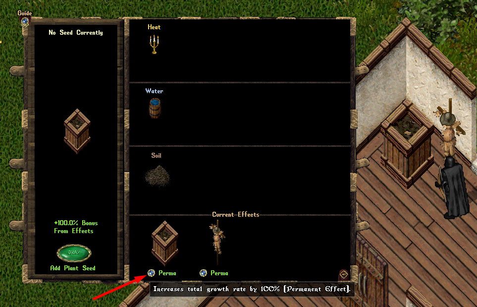
二十三、收藏卡册 Collectable Card Tomes
- 收藏卡册现在所有玩家均可查看（即使不是 Owner / Co-Owner / Friends）。
- 修复了玩家无法通过右键单击特定卡牌页面来关闭收藏卡册菜单的问题。
二十四、国王集市 King's Faire
- 修复了参与国王集市活动的玩家会导致其账号下、位于国王集市区域的其他未参与玩家无法使用物品（如杂耍物品）的问题。
二十五、钓竿 Fishing Poles
- 玩家现在可以双击背包中的任意钓竿来「快速装备 Fast Equip」，机制与武器/护甲相同。
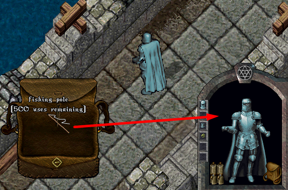
二十六、每周抽奖 Weekly Lotteries
- 修复了上一周抽奖的「抽奖结束日期」会错误地显示为最近一次已完成抽奖日期的问题。
二十七、活动月门 Event Moongates
- 玩家在幽灵状态下，将无法再使用公共月门前往限时活动地点（如国王集市 King's Faire、普雷瓦利亚草原 Prevalia Meadows、雪球大战 Snowbrawl 等）。
二十八、公会大师 Society Master
- 玩家现在可以双击任意公会大师 NPC Society Masters 来打开其公会任务菜单。
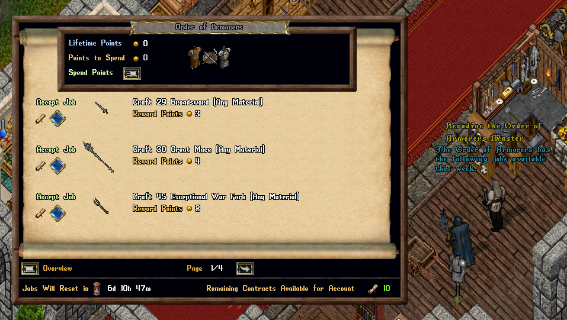
二十九、国王集市互动普雷瓦利亚物品 King's Faire Interactive Prevalia Items
- 大量来自国王集市的互动普雷瓦利亚商人物品（包括杂耍物品 Juggling Items / 喷火油 Firebreathing Oil / 纸飞机 Paper Airplanes）现在可在骑乘 Mounted 状态下使用。
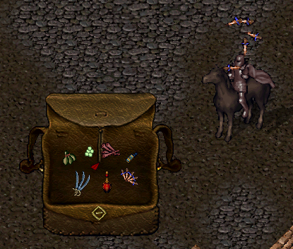